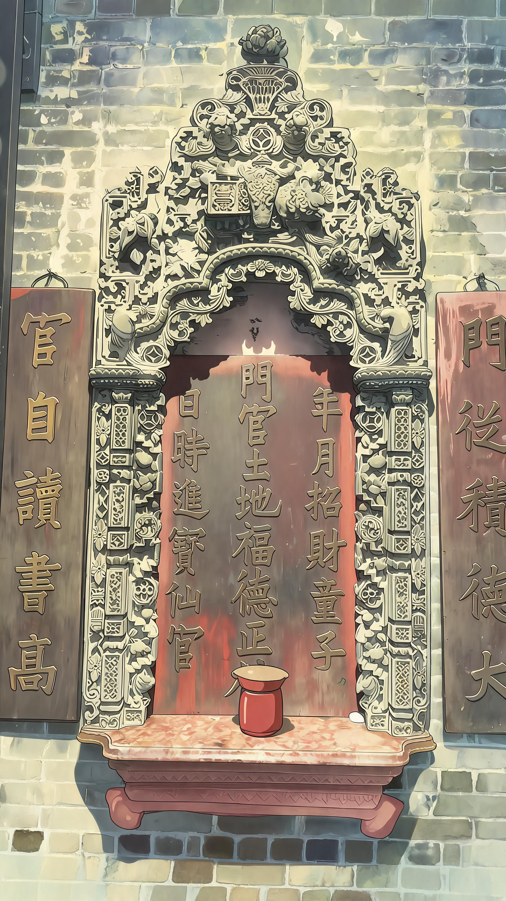
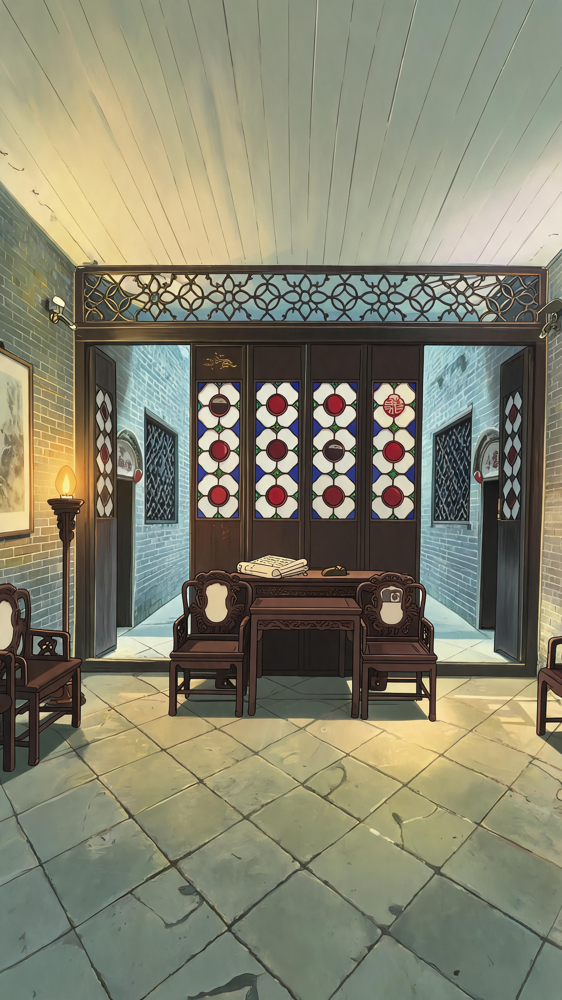

清代用於滿洲窗的彩色玻璃全部依賴海外進口，在當時屬於極為珍貴的豪華建材，民間有「一片玻璃值千金」的說法，只有富商官宦之家才有能力大規模使用。
顏色選擇並非隨意搭配，有明確的審美與功用講究：
• 乳白玻璃：最基礎的襯底色，透光最為溫和均勻，保證室內採光的同時維護隱私；
• 硃紅玻璃：對應中式傳統的喜慶吉祥寓意，常作為花芯視覺中心，光線透過時會在室內投下暖紅光斑；
• 寶藍玻璃：取清雅靜謐之意，多用作邊條與框飾，與紅色形成強烈對比，層次感鮮明；
• 翠綠玻璃：多用於棂條銜接節點，呼應嶺南草木繁盛的地域特色，也有生機長存的吉祥含義。
工匠還會通過蚀刻、磨砂、噴砂脫色等工藝，在玻璃上製作花鳥、書法、吉祥紋樣，讓窗戶在不同光線下呈現不同的光影效果，兼具實用性與藝術性。
連通左上、右下兩處紅哨，繪出一條連續不斷的訊道
白、綠、紅地塊可通行；藍地塊為障礙，絕對不可穿越
僅可沿上下左右相鄰格子行走，不可斜向、不可跳格、不可重複走同一格
正確訊道會串起完整暗紋字序，對應現場一處實物